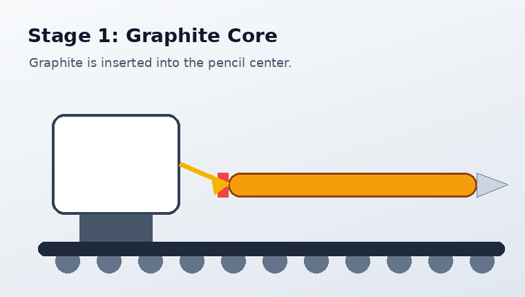
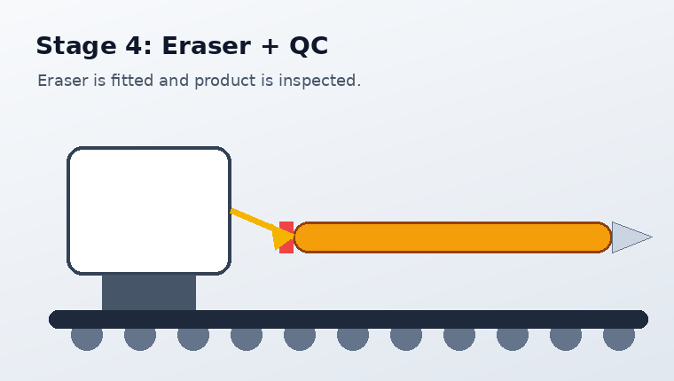

The Pencil Production Line
The line has four clear stations. Each product must pass every station before it is counted as a good pencil.

1. Graphite Core
The graphite core is inserted first. If the graphite is missing, the pencil is rejected because it cannot function.
2. Wooden Body
The wooden body is assembled around the graphite. The system can mark the part defective if the body is not correctly attached.
3. Eraser Holder
The metal holder is attached to the end of the pencil. A missing holder creates an assembly fault.

4. Eraser and Quality Control
The eraser is added and the final quality check decides whether the pencil is accepted or rejected.
Production Logic
Start command
The operator presses Start on the HMI. The backend changes the state to productive.
Station processing
The product moves through each station in order. The program updates counters and current stage text.
Defect decision
Random quality checks simulate missing graphite, broken eraser, holder fault, or incorrect assembly.
Data logging
Production values can be sent to InfluxDB and shown in Grafana as a dashboard.